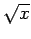
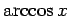

Inhalt Index DeskTop Bronstein

 Funktionen und ihre Darstellung Funktionsbegriff Stetigkeit einer Funktion
Funktionen und ihre Darstellung Funktionsbegriff Stetigkeit einer Funktion


Eine Funktion y=f(x) heißt an der Stelle x = a stetig, wenn
Das ist genau dann der Fall, wenn es zu jedem vorgegebenen  ein gibt, so daß gilt:
ein gibt, so daß gilt:
| (2.30) |
Man spricht von einseitiger (links- oder rechtsseitiger) Stetigkeit, wenn anstelle von nur einer der beiden Grenzwerte oder existiert und gleich f(a-0) oder f(a+0) ist.
Wenn eine Funktion für alle Werte x in einem gegebenen Intervall von a bis b stetig ist, dann wird die Funktion stetig in diesem Intervall genannt, das als Zahlenintervall offen, halboffen oder abgeschlossen sein kann. Ist eine Funktion für alle Punkte der Zahlengerade definiert und stetig, dann heißt sie überall stetig.
Eine Funktion besitzt für den Wert der sich im Inneren oder auf dem Rande des Definitionsbereiches befindet, eine Unstetigkeitsstelle, wenn dort die Funktion nicht definiert ist oder wenn f(a) nicht mit dem Grenzwert übereinstimmt bzw. dieser Grenzwert nicht existiert. Wenn die Funktion nur auf einer Seite von x=a definiert ist, z.B.  für x = 0 und  für dann wird nicht von einer Unstetigkeitsstelle, sondern von einem Abbrechen der Funktion gesprochen.
Eine Funktion f(x) wird stückweise stetig genannt, wenn sie in allen Punkten eines Intervalls mit Ausnahme endlich vieler einzelner Punkte stetig ist und in ihren Unstetigkeitsstellen endliche Sprünge besitzt.